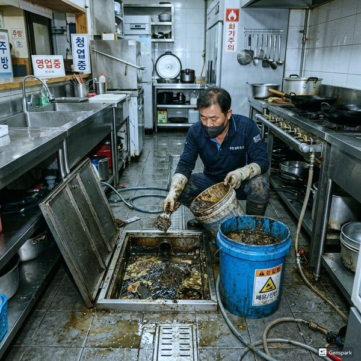
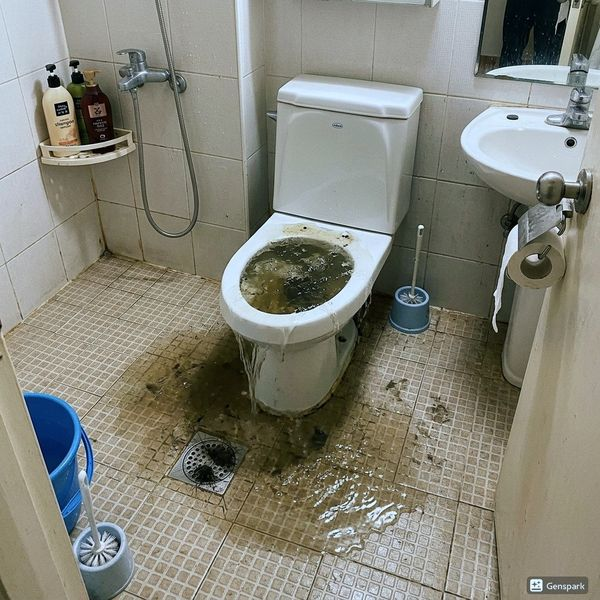

제우스시설관리 | 2025년 4월

음식점을 운영하신다면 그리스트랩(유수분리기) 관리는 선택이 아닌 의무입니다. 환경부 규정에 따라 관리 의무를 이행하지 않으면 과태료가 부과됩니다.
그리스트랩은 주방 배수에서 기름과 음식물 찌꺼기를 걸러내는 장치입니다. 하수도로 기름이 직접 유입되면 하수관 막힘, 하수처리장 부하 증가, 수질 오염 등의 문제가 발생하므로, 음식점에는 설치가 의무화되어 있습니다.
📌 일일 관리: 표면에 떠 있는 기름 걷어내기, 거름망 청소
📌 주간 관리: 그리스트랩 내부 청소, 침전물 제거
📌 월간 관리: 전문 업체에 의한 완전 청소 및 연결 배관 세척
📌 분기 관리: 전체 시스템 점검, 부품 교체 확인
물환경보전법 시행령에 따라 비점오염원 관리 의무를 이행하지 않은 경우 다음과 같은 과태료가 부과됩니다:
⚠️ 1차 위반: 100만원
⚠️ 2차 위반: 200만원
⚠️ 3차 이상: 300만원
※ 지자체별로 단속 기준이 다를 수 있으므로, 관할 구청에 확인하세요.
직접 청소는 표면의 기름만 걷어내는 수준이지만, 전문 청소는 그리스트랩 내부는 물론 연결 배관까지 고압세척으로 완전히 세척합니다. 정기적인 전문 청소로 배수 불량, 악취, 해충 발생을 근본적으로 방지할 수 있습니다.
제우스시설관리는 음식점 그리스트랩 정기 청소 계약 서비스를 제공합니다. 월 1회 방문 청소부터 필요시 긴급 출동까지, 사업주의 편의에 맞춘 서비스를 운영합니다.
